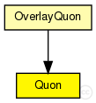
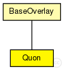

This documentation is released under the Creative Commons license
This documentation is released under the Creative Commons license(no description)
The following diagram shows usage relationships between types. Unresolved types are missing from the diagram. Click here to see the full picture.
The following diagram shows inheritance relationships for this type. Unresolved types are missing from the diagram. Click here to see the full picture.
| BaseOverlay (simple module) |
Base class for overlay implementations |
If a module type shows up more than once, that means it has been defined in more than one NED file.
| OverlayQuon (compound module) | (no description) |
| Name | Type | Default value | Description |
|---|---|---|---|
| rpcUdpTimeout | double |
default timeout value for direct RPCs |
|
| rpcKeyTimeout | double |
default timeout value for routed RPCs |
|
| optimizeTimeouts | bool |
calculate timeouts from measured RTTs and network coordinates |
|
| rpcExponentialBackoff | bool |
if true, doubles the timeout for every retransmission |
|
| localPort | int |
UDP port for overlay messages |
|
| debugOutput | bool |
enable debug output |
|
| keyLength | int |
overlay key length in bits |
|
| nodeId | string |
optional nodeId as string in hexadecimal notation |
|
| useCommonAPIforward | bool |
enable CommonAPI forward() calls |
|
| drawOverlayTopology | bool |
draw arrow to successor node? |
|
| hopCountMax | int |
maximum number of overlay hops |
|
| recNumRedundantNodes | int |
numRedundantNodes for recursive routing |
|
| joinOnApplicationRequest | bool |
only join the overlay on application request |
|
| collectPerHopDelay | bool |
delay statistics for single hops |
|
| routeMsgAcks | bool |
use RPCs for route messages |
|
| lookupRedundantNodes | int |
number of next hops in each step |
|
| lookupParallelPaths | int |
number of parallel paths |
|
| lookupParallelRpcs | int |
number of nodes to ask in parallel |
|
| lookupVerifySiblings | bool |
true, if siblings need to be authenticated with a ping |
|
| lookupMajoritySiblings | bool |
true, if sibling candidates are selected by a majority decision if using parallel paths |
|
| lookupMerge | bool |
true, if parallel Rpc results should be merged |
|
| lookupFailedNodeRpcs | bool |
communicate failed nodes |
|
| lookupStrictParallelRpcs | bool |
limited the number of concurrent rpcs to parameter parallelRpcs |
|
| lookupUseAllParallelResponses | bool |
merge all parallel responses from earlier steps |
|
| lookupNewRpcOnEveryTimeout | bool |
send a new RPC immediately after an RPC timeouts |
|
| lookupNewRpcOnEveryResponse | bool |
send a new RPC after every response, even if there was no progress |
|
| lookupFinishOnFirstUnchanged | bool |
finish lookup, if the last pending RPC returned without progress |
|
| lookupVisitOnlyOnce | bool |
if true, the same node is never asked twice during a single lookup |
|
| lookupAcceptLateSiblings | bool |
if true, a FindNodeResponse with sibling flag set is always accepted, even if it is from a previous lookup step |
|
| routingType | string |
default routing mode (iterative, semi-recursive,...) |
|
| rejoinOnFailure | bool |
rejoin after loosing connection to the overlay? |
|
| sendRpcResponseToLastHop | bool |
needed by KBR protocols for NAT support |
|
| recordRoute | bool |
record visited hops on route |
|
| dropFindNodeAttack | bool |
if node is malicious, it tries a findNode attack |
|
| isSiblingAttack | bool |
if node is malicious, it tries a isSibling attack |
|
| invalidNodesAttack | bool |
if node is malicious, it tries a invalidNode attack |
|
| dropRouteMessageAttack | bool |
if node is malicious, it drops all received BaseRouteMessages |
|
| measureAuthBlock | bool |
if true, measure the overhead of signatures in rpc messages |
|
| restoreContext | bool |
if true, a node rejoins with its old nodeId and malicious state |
|
| areaDimension | double |
movement range from [0.0, 0.0] to [areaDimension, areaDimension] |
|
| joinTimeout | double |
retry join timeout in seconds |
|
| deleteTimeout | double |
delete dead/offline neighbors from list of known neighbors after # seconds |
|
| aliveTimeout | double |
ping neighbor status in seconds |
|
| contactBackupIntervall | double |
contact backup neighbors every # seconds |
|
| numBackups | int |
the number of binding beackups per quadrant |
|
| connectionLimit | double |
maximum # of neighbor connections (for use with dynamic AOI) |
|
| minAOIWidth | double |
minimum area of interest size (for use with dynamic AOI) |
|
| AOIWidth | double |
this nodes area of interest (maximum area of interest when dynamic AOI is used) |
|
| AOIBuffer | double |
increase AOI by fixed amount |
|
| AOIAdaptionSensitivity | double |
how much the AOI can be adapted in one step (for use with dynamic AOI) (max=1) |
|
| AOIGossipSensitivity | double |
how much the AOI adaption can be influenced by neighbors (for use with dynamic AOI) (max=1) |
|
| AOIAdaptLinear | bool |
use linear AOI adaption? (for use with dynamic AOI) |
|
| useSquareMetric | bool |
use max(|a.x - b.x|, |a.y - b.y|) as distance metric instead of euclidean distance |
| Name | Value | Description |
|---|---|---|
| class | Quon | |
| display | i=block/circle |
| Name | Direction | Size | Description |
|---|---|---|---|
| udpIn | input |
gate from the UDP layer |
|
| udpOut | output |
gate to the UDP layer |
|
| tcpIn | input |
gate from the TCP layer |
|
| tcpOut | output |
gate to the TCP layer |
|
| appIn | input |
gate from the application |
|
| appOut | output |
gate to the application |
|
| direct_in | input |
gate for sendDirect |
simple Quon extends BaseOverlay { parameters: @class(Quon); double areaDimension; // movement range from [0.0, 0.0] to [areaDimension, areaDimension] double joinTimeout @unit(s); // retry join timeout in seconds double deleteTimeout @unit(s); // delete dead/offline neighbors from list of known neighbors after # seconds double aliveTimeout @unit(s); // ping neighbor status in seconds double contactBackupIntervall @unit(s); // contact backup neighbors every # seconds int numBackups; // the number of binding beackups per quadrant double connectionLimit; // maximum # of neighbor connections (for use with dynamic AOI) double minAOIWidth; // minimum area of interest size (for use with dynamic AOI) double AOIWidth; // this nodes area of interest (maximum area of interest when dynamic AOI is used) double AOIBuffer; // increase AOI by fixed amount double AOIAdaptionSensitivity; // how much the AOI can be adapted in one step (for use with dynamic AOI) (max=1) double AOIGossipSensitivity; // how much the AOI adaption can be influenced by neighbors (for use with dynamic AOI) (max=1) bool AOIAdaptLinear; // use linear AOI adaption? (for use with dynamic AOI) bool useSquareMetric; // use max(|a.x - b.x|, |a.y - b.y|) as distance metric instead of euclidean distance }
This documentation is released under the Creative Commons license